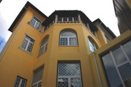

Creche "Casa Sanchez"
Num edifício totalmente recuperado para o efeito e cumprindo todas as disposições legais, encontra-se já em funcionamento a Creche Casa Sanches.
Com esta infra-estrutura, a Santa Casa da Misericórdia de Leiria vocaciona mais uma importante valência no âmbito das suas competências sociais, com uma capacidade instalada para 33 crianças, dos 0 aos 36 meses.
Apostando em elevados padrões de qualidade, quer no que toca à execução da obra física, quer no domínio do equipamento instalado e dos recursos humanos, pretende-se que a creche se assuma em Leiria como um espaço de referência qualitativa na área pueril, contando com uma estrutura de recursos humanos empenhada e com experiência consolidada no domínio infantil.
O modelo de funcionamento da Creche Casa Sanches tem por base o princípio da subsidiariedade, estatuído pela Segurança Social. A aposta neste tipo de valências pela Santa Casa da Misericórdia de Leiria pretende facilitar às famílias o ingresso das crianças neste tipo de instituições, em virtude da escassez das mesmas.
Últimas Noticias
Hospital D. Manuel de Aguiar promove excelência inovadora em Imagiologia

Agora o HDMA promove a abertura do seu renovado serviço de Imagiologia, onde poderá efectuar exames da mais variada ordem, em excelentes instalações, com acesso a tecnologia digital moderna e um atendimento humanizado e diferenciado.
Hospital D. Manuel de Aguiar promove excelência inovadora em Imagiologia
Agora o HDMA promove a abertura do seu renovado serviço de Imagiologia, onde poderá efectuar exames da mais variada ordem, em excelentes instalações, com acesso a tecnologia digital moderna e um atendimento humanizado e diferenciado.
Hospital D. Manuel de Aguiar promove excelência inovadora em Imagiologia
Agora o HDMA promove a abertura do seu renovado serviço de Imagiologia, onde poderá efectuar exames da mais variada ordem, em excelentes instalações, com acesso a tecnologia digital moderna e um atendimento humanizado e diferenciado.